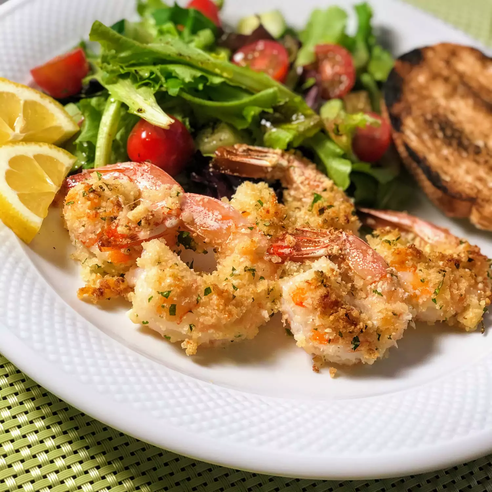

Delicious crispy shrimp coated in a bread crumb-Parmesan mixture. My
family can't get enough of it!
I would suggest doubling the recipe if
you have very large eaters because this is addictive! Serve with pasta
and salad.
Ingredients
- nonstick cooking spray
- 1 cup dry bread crumbs
- 1 cup shredded parmesan cheese
- 2 tablespoons dried parsley
- 1 1/2 teaspoons garlic powder
- 1 poung large shrimp, peeled and deveined
- 2 tablespoons melted butter (to taste)
Instructions
- Preheat oven to 350 degrees, spray 9x13in casserole dish
- Combine bread crumbs, cheese, parsley, and garlic powder in resealable
bag, add shrimp and shake.
- Lay shimp flat in prepared dish, sprinkle with remaining mix,
drizzle butter on top.
- Bake for 15-20 minutes, switch to broil for 2-3 minutes.